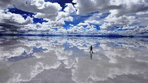

Viajes auténticos en Bolivia.
Hace más de cinco años, Luna de Sal Tours nació como un sueño impulsado por la pasión de mostrar al mundo la belleza única de Bolivia. Comenzamos con recursos limitados pero con una gran determinación. Cada viaje fue una oportunidad para aprender, mejorar y construir algo más grande. Lo que empezó como una idea sencilla, poco a poco fue tomando forma gracias al esfuerzo constante y la ilusión de ofrecer experiencias auténticas.
El camino no fue fácil. Enfrentamos momentos difíciles, incertidumbre y retos que pusieron a prueba nuestra perseverancia. Sin embargo, cada obstáculo nos hizo más fuertes. Aprendimos a adaptarnos, a mejorar nuestros servicios y a nunca rendirnos. La confianza de nuestros viajeros fue clave para seguir adelante y convertir cada dificultad en una oportunidad de crecimiento.
Hoy somos una agencia consolidada que ofrece experiencias inolvidables en Bolivia. Hemos crecido, evolucionado y mejorado, pero sin perder nuestra esencia. Nos enfocamos en crear momentos únicos que conecten a cada viajero con la magia del país. Nuestro compromiso sigue siendo el mismo: ofrecer aventuras que se conviertan en recuerdos para toda la vida.

Vive una de las experiencias más impresionantes del planeta. El Salar de Uyuni no es solo un destino, es un lugar mágico donde el cielo y la tierra se fusionan creando paisajes surrealistas. Perfecto para fotografía, aventura y momentos únicos que no podrás encontrar en ningún otro lugar del mundo.